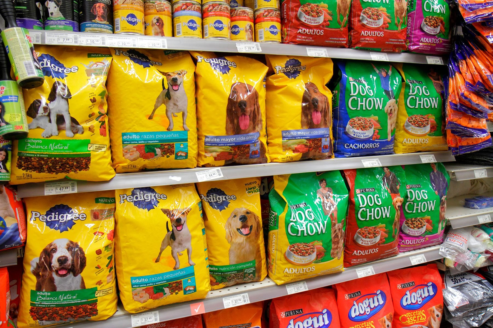
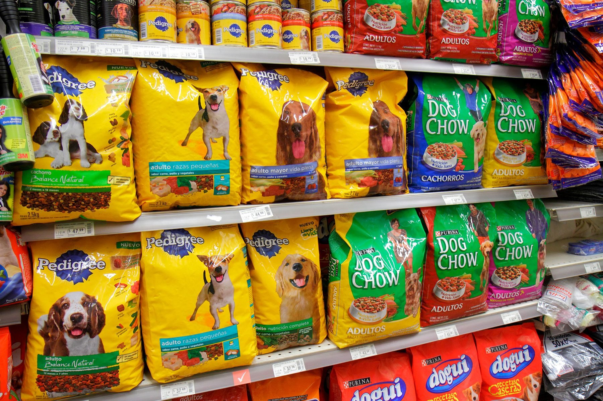

Does your pet have anxiety?
Pet anxiety is most common in dogs, but even small mammals like hamsters and rabbits can be troubled at times.
Anxiety in animals results in abnormal and sometimes destructive behavior, all of which can be disruptive to the entire family.
If your pet demonstrates anxiety, you can take the following steps to help him or her overcome it.
These steps might not cure the condition entirely, but they can quell it at the very least.
Determine the Cause of the Anxiety
Your pet's anxiety stems from something specific. It can be an incident, an object, or a combination of both.
Whether it's your vacuum or crossing the street that gives your pet the Heebie-Jeebies, identifying the specific source will help you target the anxiety.
Use Positive Association
If your pet quivers at the prospect of getting into your car, for instance, you can try to pattern her to reduce the fear.
Attempt a short exercise during which you put your pet in the fearful situation, then immediately reward him with a treat for dealing with it.
This promotes positive association; it gives your pet the opportunity to pair the troubling activity with something he looks forward to,
thus helping him erase that trigger of fear. Be careful not to overdo this exercise though, as you don't want it to have the opposite effect.
Use Distractions
Simple distractions from an anxiety trigger can be very effective.
Distractions work best with temporary triggers that cannot be controlled, such as thunder or fireworks.
Instead of enduring another episode of your beloved furrball hiding under your bed while the thunder rolls,
encourage her to fetch a favorite toy. Give her a rare treat or even just a lavish belly rub. Before long,
she will phase out the booms of doom and both of you will be grateful.
Training Can Help
If you've ever left your pet at home to run an errand and came back to utter chaos at the paws of your pup, you are all too familiar with the classic case of pet anxiety.
Your furry family member just can't bare being home without you, so he eats your favorite pair of shoes or rips the morning paper to nasty, wet shreds.
You cannot become a hermit, and you can't tote your pup to work either, so the next best solution is behavioral training.
Experts like Cesar Millan train the anxiety out of dogs on a regular basis, and they swear by it.
Though watching a few episodes of "The Dog Whisperer" might give you an idea of what you can expect,
your best bet is to find a local trainer for you and your pal. Training might involve patterning, but it consists of a lot more than that.
As soon as you and your pet learn the tools most effective for combating his or her individual anxiety,
you can harness them to create a more enjoyable future.
Pet anxiety is an obstacle neither human nor animal should endure.
Let's face it - your heart breaks for your pets misery even as you're mourning those chewed-up shoes.
Make your pet more comfortable by following the preliminary steps above. If all else fails, consulting your vet is your next best move.
Keeping your pet cool in the summer
Pre-hot weather grooming
Before the hot summer days arrive,
you may want to consider grooming your pet. Thought your pet does have the natural defense of shedding as the heat approaches,
it never hurts to help things along by giving a quick brushing to get out all the loose hair. This can be true particularly for dogs.
Also, if your dog has long hair, you might want to cut it down to an inch long or so. Be sure that you never cut down to your dog’s skin.
Shade and water
If your pet is outside a lot, make sure that it has a shady place to rest,
with a supply of clean water. On the hottest days, putting a few ice cubes in the dish can help a lot.
These are very simple but useful steps to help keep your pet cool.
In the car
If it’s hot outside, you shouldn’t leave your pets unattended in your vehicle.
Cars will heat up quickly in the sun and can far exceed the temperature outside.
Even leaving the car running with the air conditioning isn’t a guarantee; since it is possible the car can stop running.

 
